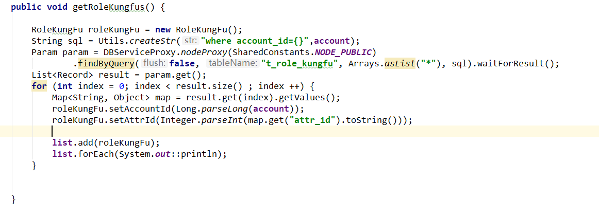
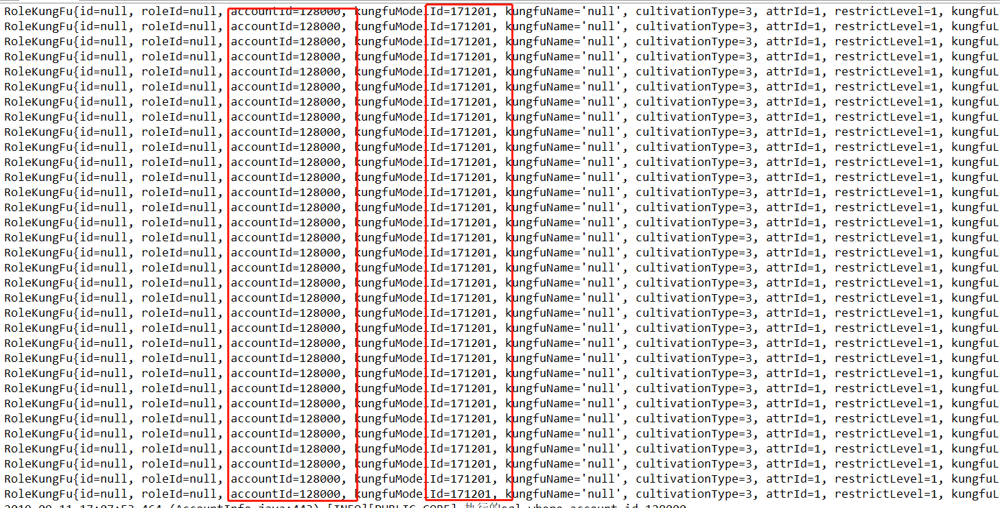
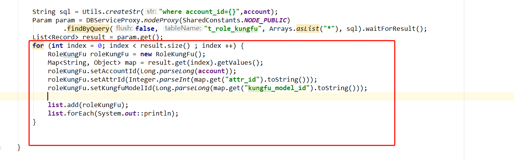
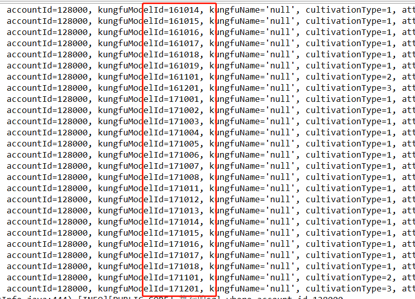

记录每次的错误，强大是慢慢的积累，先看看代码，

往list中循环添加RoleKungFu对象，看似没有问题，结果打印则显示：
全部是重复的数据！这是因为啥呢，因为将对象add入list中时，放入list中的其实是对象的引用，虽然每次都有重新的set和get,但是实质上是同一个对象，
每次都是重新的赋值后覆盖之前的数据，所以循环的都是重复数据，换一句说，new这个关键字是开辟堆内存空间的，上图只new了一次，所以只开辟一块内存空间，
这个时候的对象地址是唯一的，所以操作的永远是这块内存上的对象，只是对其的属性赋值并没其他操作，那么解决的办法就很明显了，我可以多"new"几个对象，
有了不同的内存地址，操作的就是不同的对象了，所以可以将上图的实例化操作放入循环中，每次循环都重新实例化，效果如下
这样的结果如下：
至此，解决了问题，说句题外话，new是造成耦合性的最大元凶。